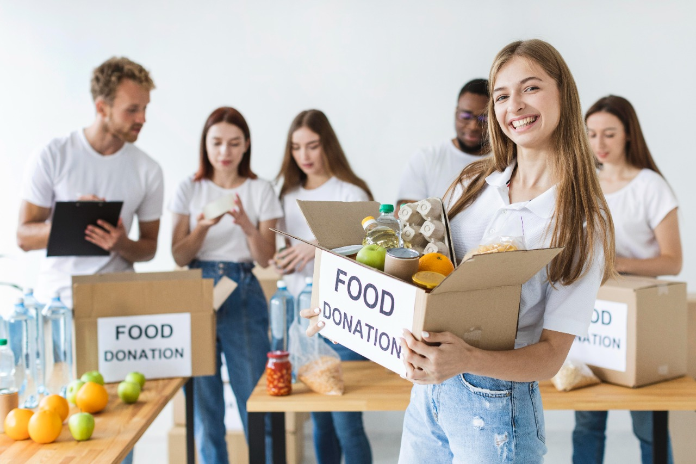
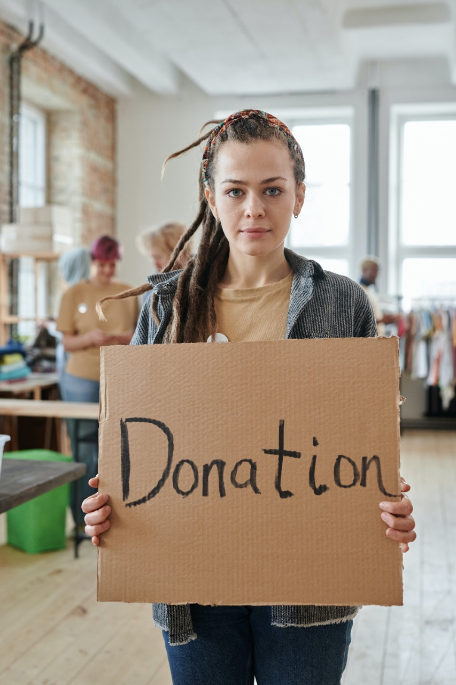
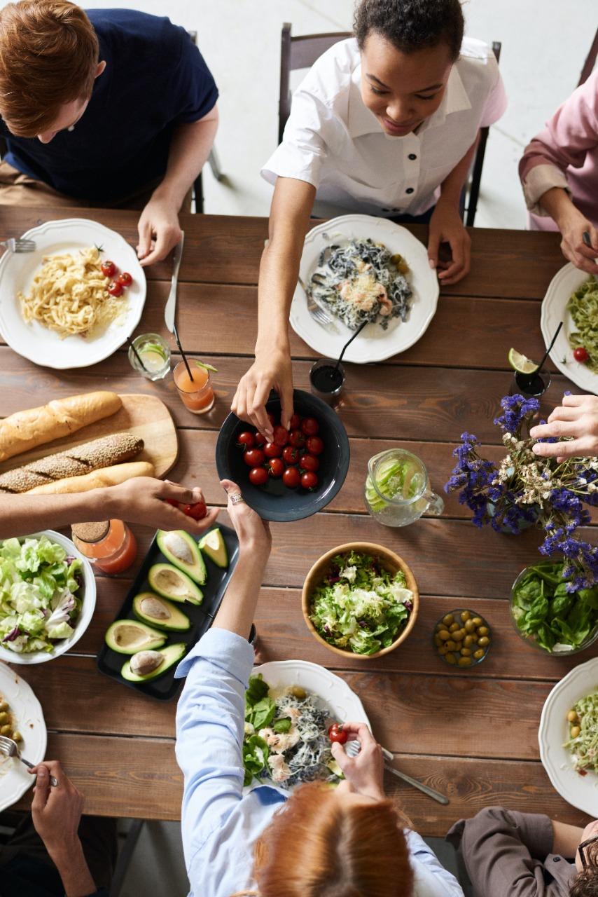
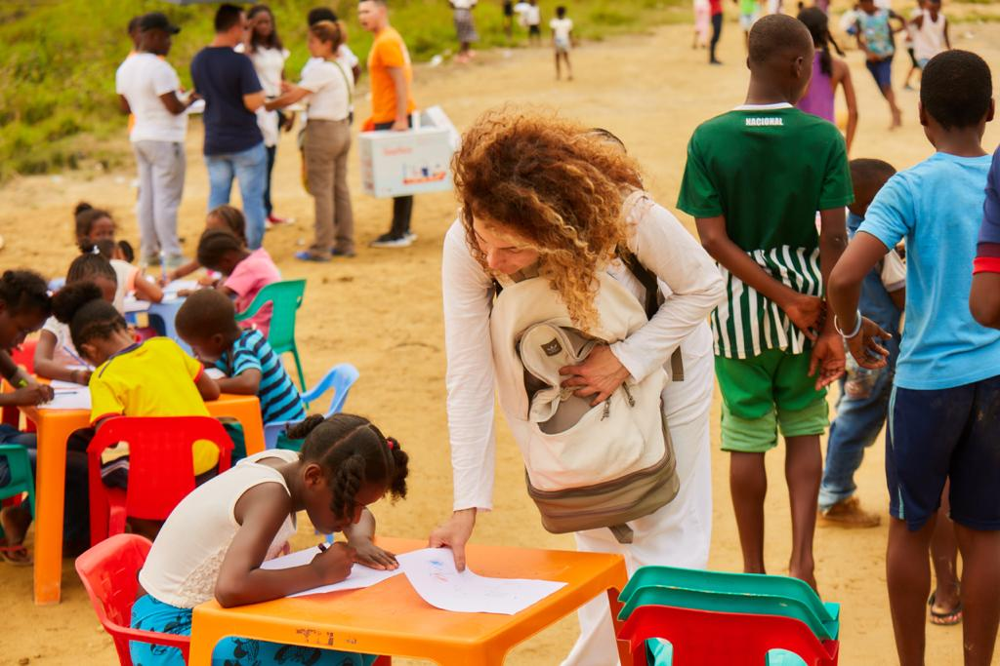
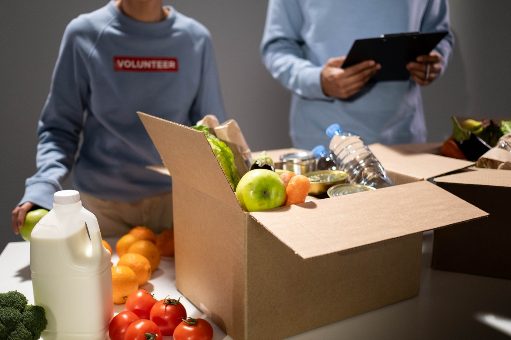

¿Qué es Pancitas Llenas?Pancitas llenas es el banco de alimentos más grande de Colombia, recolectamos alimentos perecederos y no perecederos para entregar a personas vulnerables en diferentes situaciones, contamos con el apoyo de personas de buen corazón que buscan una noche de Colombia con todas las pancitas llenas. Seguiremos creciendo con tu ayuda y con cada persona que quiera aportar un granito a esta causa. |
 |
|---|---|
|  | ¿Cómo puedo hacer parte de Pancitas Llenas?Desde el rol que desees puedes hacer parte de pancitas llenas, hemos creado diferentes alternativas para que tú seas quien elige como aportar, sea cual sea el rol que has elegido eres muy importante para nosotros y para Colombia GRACIAS. A continuación, podrás elegir el rol en el que te sientas más cómodo. |
ROL RESTAURANTESi tienes un restaurante y al final del día te sobra comida preparada o perecedera en buen estado, puedes inscribirte en Pancitas Llenas como RESTAURANTE y donar la comida, ¡No te preocupes! no debes desplazarte de tu lugar habitual uno de nuestros conductores pasara a recolectar la comida. A final de cada mes podrás tener un reporte de la cantidad de comida que has donado y un certificado de donación que podrás usar para la deducción de impuestos |
 |
ROL CONDUCTORCon solo una o dos horas al día tendrás la oportunidad de llenar algunas pancitas, en nuestro aplicativo varios restaurantes donan su comida a final del día y si tú tienes un transporte motorizado disponible, podrás agendar la recolección de alimentos y entregarla a las personas más vulnerables y que pueden estar deseando un buen plato de comida al llegar la noche. No te preocupes si de pronto no sabes cómo empezar a repartir o en donde, nosotros en una llamada podremos guiar tu proceso, lo que podemos garantizar es que dormirás feliz y tranquilo de saber que alguien durmió sin hambre gracias a tu labor. Es importante que nos ayudes con la recolección y entrega oportuna de los alimentos, pero al inscribirte no estás obligado de hacerlo todos los días o a cada momento, solo cuando tu disponibilidad lo permita. |
|
ROL LIDER COMUNITARIOSi tu pasión es ayudar y eres líder social de una comunidad puedes inscribirte en Pancitas llenas y realizar solicitudes de mercados o comida perecedera para tu comunidad, buscaremos la forma de ayudarte en las 24 horas siguientes a tu solicitud a medida que nuestro Stock lo permita. |
|
|  | ROL FUNDACIONSi manejas una fundación y necesitas alimentos para tus beneficiarios, inscríbete en Pancitas llenas y realiza la solicitud correspondiente de mercado o alimentos perecederos, con gusto tramitaremos tu solicitud y haremos lo posible por brindarte alimentos de nuestro banco. |
|  | ROL PERSONA NATURALSi eres una persona natural y tienes comida que puedas donar o dinero que será utilizado para la compra de comida, puedes realizar tu donación y recogeremos los alimentos en la puerta de tu casa en el horario de tu preferencia. |